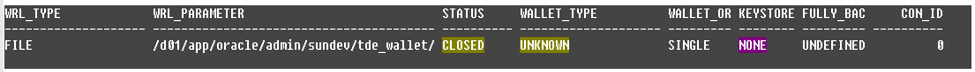
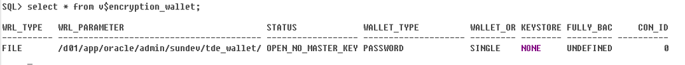
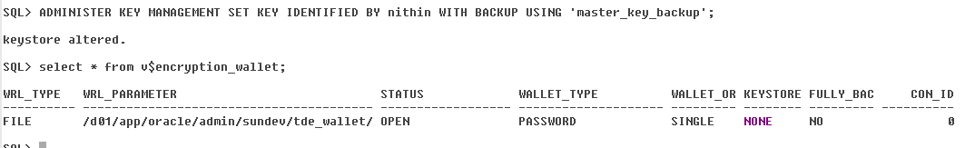

Oracle Database secures data inside the database with authentication, authorization and auditing — but not the operating-system data files the data is stored in. Transparent Data Encryption (TDE) closes that gap: it encrypts sensitive data in the data files (and therefore in backups), and keeps the encryption keys in a security module outside the database called a keystore.
TDE is transparent because applications don't change. Data is encrypted automatically when it's written to disk and decrypted automatically when an authorized session reads it, and key management is built in. You can encrypt individual columns or entire tablespaces.
Both column and tablespace encryption use a two-tier key architecture: data is encrypted with table or tablespace keys, and those keys are themselves encrypted with a TDE master encryption key stored in the keystore. Without the master key, an intruder can't read the data from storage or backup media.
The example database is sundev (Oracle 19.3) on host orclncdvl01.
mkdir -p /d01/app/oracle/admin/sundev/tde_walletAdd this entry to sqlnet.ora:
ENCRYPTION_WALLET_LOCATION =
(SOURCE = (METHOD = FILE)
(METHOD_DATA =
(DIRECTORY = /d01/app/oracle/admin/sundev/tde_wallet/)))ENCRYPTION_WALLET_LOCATION in sqlnet.ora is deprecated from Oracle 19c. The newer method is the WALLET_ROOT and TDE_CONFIGURATION initialization parameters, for example ALTER SYSTEM SET WALLET_ROOT='/d01/app/oracle/admin/sundev/wallet' SCOPE=SPFILE;, restart, then ALTER SYSTEM SET TDE_CONFIGURATION='KEYSTORE_CONFIGURATION=FILE'; — the keystore then lives in a tde subdirectory of WALLET_ROOT.Connect as a user with the SYSDBA, SYSKM or ADMINISTER KEY MANAGEMENT privilege, and create the keystore with a password:
sqlplus / as sysdba
ADMINISTER KEY MANAGEMENT CREATE KEYSTORE '/d01/app/oracle/admin/sundev/tde_wallet/'
IDENTIFIED BY <keystore_password>;
-- keystore altered.
!ls /d01/app/oracle/admin/sundev/tde_wallet/
-- ewallet.p12The ewallet.p12 file that appears is the keystore. Check its status:
SELECT wrl_type, wrl_parameter, status, wallet_type FROM v$encryption_wallet;
CLOSED.The keystore status moves through three stages:
ADMINISTER KEY MANAGEMENT SET KEYSTORE OPEN IDENTIFIED BY <keystore_password>;
ADMINISTER KEY MANAGEMENT SET KEY
IDENTIFIED BY <keystore_password>
WITH BACKUP USING 'master_key_backup';
OPEN. WITH BACKUP saves a copy of the keystore first.CONTAINER = ALL, so every PDB's keystore is opened and gets a master key.A password keystore must be opened again after every restart. To have it open automatically, create an auto-login keystore (cwallet.sso) from it:
ADMINISTER KEY MANAGEMENT CREATE AUTO_LOGIN KEYSTORE
FROM KEYSTORE '/d01/app/oracle/admin/sundev/tde_wallet/'
IDENTIFIED BY <keystore_password>;ewallet.p12 or its password, the encrypted data can't be decrypted — not even by Oracle Support. Back it up separately from the database backups (keeping them together defeats the point of encrypting the backups), and back it up again every time the master key changes. Use CREATE LOCAL AUTO_LOGIN if the auto-login file should only work on this host.Whether you encrypt individual columns or whole tablespaces depends on the data types in the table and the features you use — several features don't support TDE column encryption.
Encryption adds overhead to each value, so the maximum size of an encrypted column is smaller than normal:
| Data type | Maximum size when encrypted |
|---|---|
| CHAR | 1,932 bytes |
| VARCHAR2 (legacy) | 3,932 bytes |
| VARCHAR2 (extended) | 32,699 bytes |
| NVARCHAR2 (legacy) | 1,966 bytes |
| NVARCHAR2 (extended) | 16,315 bytes |
| NCHAR | 966 bytes |
| RAW (extended) | 32,699 bytes |
Source: Oracle Database Advanced Security Guide, Table 3-1.
Don't use TDE column encryption with:
If any of these apply, use tablespace encryption instead.
Add the ENCRYPT clause to the column. Without an algorithm, TDE column encryption uses AES192.
CREATE TABLE emp (
first_name VARCHAR2(20),
last_name VARCHAR2(30),
emp_id NUMBER(5),
salary NUMBER(5,2) ENCRYPT
);
DESC emp
-- Name Null? Type
-- ------------------- -------- ---------------------
-- FIRST_NAME VARCHAR2(20)
-- LAST_NAME VARCHAR2(30)
-- EMP_ID NUMBER(5)
-- SALARY NUMBER(5,2) ENCRYPTENCRYPT NO SALT — encrypt without salt. Salt makes identical values encrypt differently; you must use NO SALT on a column you want to index.ENCRYPT USING '<algorithm>' — one of AES128, AES192 (default), AES256 or 3DES168.CREATE TABLE employee (
first_name VARCHAR2(128),
last_name VARCHAR2(128),
empid NUMBER ENCRYPT NO SALT,
salary NUMBER(6) ENCRYPT USING 'AES256'
);Here empid is encrypted without salt, and both columns use AES256 — all encrypted columns in a table must use the same algorithm.
3DES168. It still works, but it's a legacy algorithm; use AES (preferably AES256) for new work.By default TDE adds a 20-byte integrity check (MAC) to every encrypted value. 'NOMAC' skips it, which can save significant space and CPU on large tables with many encrypted values:
CREATE TABLE employee (
first_name VARCHAR2(128),
last_name VARCHAR2(128),
empid NUMBER ENCRYPT 'NOMAC',
salary NUMBER(6)
);Tablespace encryption encrypts everything stored in the tablespace and avoids the column-level restrictions above. A new encrypted tablespace:
CREATE TABLESPACE secure_data
DATAFILE '/d01/app/oracle/oradata/sundev/secure_data01.dbf' SIZE 100M
ENCRYPTION USING 'AES256'
DEFAULT STORAGE (ENCRYPT);From 12.2 you can encrypt an existing tablespace online:
ALTER TABLESPACE users ENCRYPTION ONLINE USING 'AES256' ENCRYPT;
SELECT tablespace_name, encrypted FROM dba_tablespaces;Each table has one TDE table key for all its encrypted columns. REKEY generates a new key, decrypts the data with the old key, re-encrypts it with the new one and updates the metadata. Add USING to switch algorithm at the same time:
ALTER TABLE employee REKEY;
ALTER TABLE employee REKEY USING 'AES256';ALTER TABLE employee REKEY USING 'AES256' 'SHA-1'; -- add/keep the integrity check
ALTER TABLE employee REKEY USING 'AES256' 'NOMAC'; -- remove itADMINISTER KEY MANAGEMENT ALTER KEYSTORE PASSWORD
[FORCE KEYSTORE]
IDENTIFIED BY <old_password>
SET <new_password>
[WITH BACKUP [USING 'backup_identifier']];After changing the password, recreate the auto-login keystore if you use one, and take a fresh backup of the keystore.